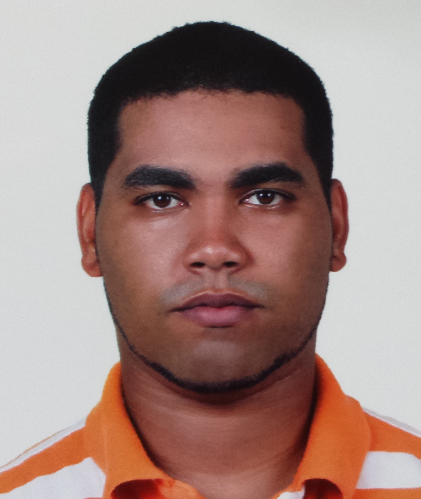

Curriculum Vitae
Raldin Dilone Hidalgo Tirado
20 de Noviembre, 1987
Santo Domingo, República Dominicana
Información Personal
Descripción
Graduado de Computer Science de la Western Michigan University como desarrollador, tengo conociminetos de programación en C#, ASP.Net, y ahora buscando expandir mis conocimientos en diseños.
- Inglés Fluente
- Frances Básico